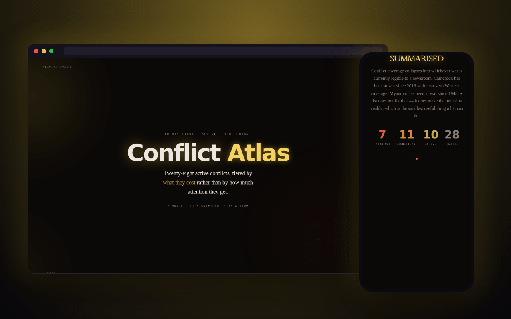

Tiered by cost
Major war, significant, active: ranked by what each one costs, not by how often it's in the news.
Twenty-eight active conflicts, tiered by what they cost rather than by how much attention they get. On one map, as of June 2026.
Filter by tier, region or ceasefire · tap one for the detail

Conflict coverage collapses into whichever war is currently legible to a newsroom. Cameroon has been at war since 2016 with near-zero Western coverage. Myanmar has been at war since 1948. A list doesn't fix that. It does make the omission visible, which is the smallest useful thing a list can do.
Major war, significant, active: ranked by what each one costs, not by how often it's in the news.
Several entries are marked as ceasefires and are still killing people. The agreement and the ground are different objects, and the badges say which one is being described.
By tier, by region, by whether a ceasefire exists on paper, or by searching for an actor or a place.
Leaflet with dark map tiles; the entries are the write-up's own words. Map positions are approximate centres of the fighting, for orientation only.
A snapshot as of June 2026, not a live feed; figures are as reported then. The point is the shape of the list, not the precision of any one number.
keep scrolling · it opens right here